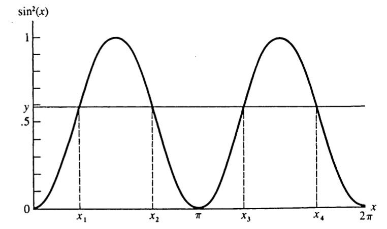
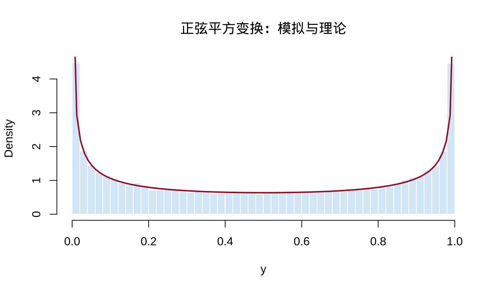

第 2 随机变量的变换与期望
本章对应原课件 chap-2.tex 及其四个子文件，依次讨论随机变量函数的分布、期望、矩与矩母函数，以及积分号下求导。原课件中的明显公式或排印错误已更正并记录在 migration_notes.md。
2.1 随机变量函数的分布
设随机变量 \(X\) 的分布函数为 \(F_X\)，\(g:\mathbb R\to\mathbb R\) 是 Borel 可测函数，令 \(Y=g(X)\)。对任意 Borel 集 \(A\)，
\[ P(Y\in A)=P\{g(X)\in A\}=P\{X\in g^{-1}(A)\}, \]
其中 \(g^{-1}(A)=\{x:g(x)\in A\}\)。特别地，
\[ F_Y(y)=P(Y\le y)=P\{X\in g^{-1}((-\infty,y])\}. \]
若 \(X\) 有密度 \(f_X\)，则 \(F_Y(y)=\int_{\{x:g(x)\le y\}}f_X(x)\,dx\)。若 \(X\) 离散，则
\[ p_Y(y)=\sum_{x\in g^{-1}(\{y\})}p_X(x),\qquad y\in\mathcal Y, \]
而在 \(y\notin\mathcal Y\) 时 \(p_Y(y)=0\)。
2.2 例 2.1.2：正弦平方变换
设 \(X\sim U(0,2\pi)\)，即 \(f_X(x)=1/(2\pi)\)（\(0<x<2\pi\)），令 \(Y=\sin^2X\)。其支撑集为 \([0,1]\)。最终有
\[ F_Y(y)=\frac{2}{\pi}\arcsin\sqrt y,\qquad f_Y(y)=\frac{1}{\pi\sqrt{y(1-y)}}. \]
查看详细解答
对 \(0<y<1\)，令 \(a=\arcsin\sqrt y\in(0,\pi/2)\)。在一个周期 \((0,2\pi)\) 内，\(\sin^2x\le y\) 恰好发生在
\[ (0,a]\cup[\pi-a,\pi+a]\cup[2\pi-a,2\pi), \]
总长度为 \(4a\)。均匀分布把区间长度除以 \(2\pi\)，所以
\[ F_Y(y)=\frac{4a}{2\pi}=\frac2\pi\arcsin\sqrt y. \]
利用链式法则，
\[ \begin{aligned} f_Y(y) &=\frac2\pi\frac{d}{dy}\arcsin\sqrt y\\ &=\frac2\pi\frac1{\sqrt{1-y}}\frac1{2\sqrt y} =\frac1{\pi\sqrt{y(1-y)}}. \end{aligned} \]
在 \(y\le0\) 时 \(F_Y(y)=0\)，在 \(y\ge1\) 时 \(F_Y(y)=1\)。

图 2.1: 原课件用于说明 sin² 变换多值性的示意图
下面用 R 模拟检查理论密度。
set.seed(202509)
x <- runif(50000, 0, 2 * pi)
y <- sin(x)^2
hist(y, probability = TRUE, breaks = 50,
col = "#D9EAF7", border = "white",
main = "正弦平方变换：模拟与理论", xlab = "y")
curve(1 / (pi * sqrt(x * (1 - x))),
from = 0.002, to = 0.998, add = TRUE,
col = "#A51C30", lwd = 2)
图 2.2: Y=sin²(X) 的模拟分布与理论密度
2.3 支撑集与单调变换
定义 2.1 随机变量 \(X\) 的支撑集及变换后变量的可能取值集合分别记为
\[ \mathcal X=\{x:f_X(x)>0\},\qquad \mathcal Y=\{y:y=g(x)\text{ for some }x\in\mathcal X\}. \]
若 \(g\) 严格递增，则 \(F_Y(y)=F_X\{g^{-1}(y)\}\)；若 \(g\) 严格递减且 \(X\) 连续，则 \(F_Y(y)=1-F_X\{g^{-1}(y)\}\)。
定理 2.1 定理 2.1.5（单调变换公式） 设 \(X\) 有连续密度 \(f_X\)，\(Y=g(X)\)，\(g\) 单调，且 \(g^{-1}\) 在 \(\mathcal Y\) 上连续可微，则
\[ f_Y(y)= \begin{cases} f_X\{g^{-1}(y)\}\left|\dfrac{d}{dy}g^{-1}(y)\right|,&y\in\mathcal Y,\\ 0,&\text{其他}. \end{cases} \]
绝对值保证无论 \(g\) 递增还是递减，所得密度都非负。
展开证明
若 \(g\) 严格递增，则
\[ F_Y(y)=P\{g(X)\le y\}=P\{X\le g^{-1}(y)\} =F_X\{g^{-1}(y)\}. \]
求导并使用链式法则，得到 \(f_X\{g^{-1}(y)\}(g^{-1})'(y)\)。若 \(g\) 严格递减，则
\[ F_Y(y)=P\{X\ge g^{-1}(y)\}=1-F_X\{g^{-1}(y)\}, \]
连续性保证端点不产生额外概率质量，求导得到 \(-f_X\{g^{-1}(y)\}(g^{-1})'(y)\)。递增时反函数导数为正，递减时为负，两式合并即为带绝对值的公式；在 \(y\notin\mathcal Y\) 时密度为 0。
2.4 例 2.1.6：倒数 Gamma 变换
设
\[ f_X(x)=\frac{x^{n-1}e^{-x/\beta}}{(n-1)!\beta^n},\qquad x>0, \]
令 \(Y=1/X\)。最终密度为
\[ \begin{aligned} f_Y(y) &=f_X(1/y)\frac1{y^2}\\ &=\frac{1}{(n-1)!\beta^n} \left(\frac1y\right)^{n+1} \exp\left(-\frac1{\beta y}\right),\qquad y>0. \end{aligned} \]
这是逆 Gamma 分布的一个特殊情形；\(y\le0\) 时密度为 0。
查看详细解答
变换 \(g(x)=1/x\) 在 \((0,\infty)\) 上严格递减，并把该区间映到自身。解 \(y=1/x\) 得
\[ g^{-1}(y)=\frac1y, \qquad \left|\frac{d}{dy}g^{-1}(y)\right|=\frac1{y^2}. \]
将这两个量代入定理 2.1.5，便得到正文密度；当 \(y\le0\) 时变换没有原像，所以 \(f_Y(y)=0\)。
2.5 例 2.1.7：标准正态的平方
设 \(X\sim N(0,1)\)，\(Y=X^2\)。最终密度为
\[ f_Y(y)=\frac{\phi(\sqrt y)}{\sqrt y} =\frac{1}{\sqrt{2\pi y}}e^{-y/2},\qquad y>0, \]
故 \(Y\sim\chi_1^2\)。原课件误把正态密度 \(\phi\) 写成分布函数 \(\Phi\)，此处已更正。
查看详细解答
平方变换的支撑为 \([0,\infty)\)。对 \(y>0\)，事件 \(X^2\le y\) 等价于 \(-\sqrt y\le X\le\sqrt y\)，所以正文的 CDF 式成立。对它求导时，
\[ \frac{d}{dy}\Phi(\sqrt y)=\frac{\phi(\sqrt y)}{2\sqrt y}, \qquad \frac{d}{dy}\{-\Phi(-\sqrt y)\} =\frac{\phi(-\sqrt y)}{2\sqrt y}. \]
标准正态密度关于 0 对称，\(\phi(-\sqrt y)=\phi(\sqrt y)\)，两项相加即得
\[ f_Y(y)=\frac{\phi(\sqrt y)}{\sqrt y} =\frac{1}{\sqrt{2\pi y}}e^{-y/2}. \]
2.6 分段单调变换
定理 2.2 定理 2.1.8 设 \(P(X\in A_0)=0\)、\(P(X\in\bigcup_{i=1}^kA_i)=1\)，\(f_X\) 在各 \(A_i\) 上连续，且 \(g\) 限制在各 \(A_i\) 上均单调。记相应反函数支为 \(g_i^{-1}\)。若各反函数支在 \(\mathcal Y\) 上连续可微，则
\[ f_Y(y)= \begin{cases} \displaystyle\sum_{i=1}^k f_X\{g_i^{-1}(y)\} \left|\dfrac{d}{dy}g_i^{-1}(y)\right|,&y\in\mathcal Y,\\ 0,&\text{其他}. \end{cases} \]
因此，对于 \(Y=\sin^2X\) 或 \(Y=X^2\)，必须把所有原像分支的贡献相加。
查看推导过程
在每个分支 \(A_i\) 上，\(g_i\) 是从 \(A_i\) 到共同支撑 \(\mathcal Y\) 的一一变换。对第 \(i\) 个分支应用定理 2.1.5，其密度贡献是
\[ f_X\{g_i^{-1}(y)\} \left|\frac{d}{dy}g_i^{-1}(y)\right|. \]
不同分支互不重叠，事件概率可以相加；把 \(i=1,\ldots,k\) 的贡献相加即得正文公式。\(A_0\) 的概率为 0，故不贡献密度。教材在定理 2.1.8 后只给出这一分支求和解释，没有另给完整形式证明。
2.7 概率积分变换
定理 2.3 定理 2.1.10 若 \(X\) 的分布函数 \(F_X\) 连续，则 \(Y=F_X(X)\sim U(0,1)\)。
展开证明
在 \(F_X\) 严格递增时，对 \(0<y<1\)，
\[ \begin{aligned} P(Y\le y) &=P\{F_X(X)\le y\}\\ &=P\{X\le F_X^{-1}(y)\}\\ &=F_X\{F_X^{-1}(y)\}=y. \end{aligned} \]
若 \(F_X\) 不严格递增，定义广义逆
\[ F_X^{-1}(y)=\inf\{x:F_X(x)\ge y\}. \]
分布函数的平坦区间具有零概率，因此事件 \(\{F_X(X)\le y\}\) 与 \(\{X\le F_X^{-1}(y)\}\) 仍有相同概率。连续性给出 \(F_X\{F_X^{-1}(y)\}=y\)。端点 \(y\le0\) 与 \(y\ge1\) 分别对应概率 0 与 1，所以 \(Y\sim U(0,1)\)。
该变换是随机数生成和拟合优度检验的重要基础。
2.8 期望的定义与计算
定义 2.2 定义 2.2.1 设 \((\mathcal S,\mathcal B,P)\) 是概率空间。若 \(\int_{\mathcal S}|X|\,dP<\infty\)，则
\[ E(X)=\int_{\mathcal S}X\,dP. \]
若 \(E|g(X)|<\infty\)，则连续情形和离散情形分别有
\[ E\{g(X)\}=\int_{-\infty}^{\infty}g(x)f_X(x)\,dx, \qquad E\{g(X)\}=\sum_xg(x)p_X(x). \]
这常称为无意识统计学家法则（LOTUS）。也可先求 \(Y=g(X)\) 的分布，再由 \(E(Y)=\int yf_Y(y)\,dy\) 计算；前一种方法通常更短。
2.9 期望的例子与性质
- 例 2.2.2： 若 \(f_X(x)=\lambda^{-1}e^{-x/\lambda}\)（\(x>0\)），则 \(E(X)=\lambda\)；这里 \(\lambda\) 是尺度参数。
查看详细解答
由定义并作分部积分，
\[ \begin{aligned} E(X) &=\int_0^\infty x\frac1\lambda e^{-x/\lambda}\,dx\\ &=\left[-xe^{-x/\lambda}\right]_0^\infty +\int_0^\infty e^{-x/\lambda}\,dx =\lambda. \end{aligned} \]
边界项为 0。
- 例 2.2.3： 若 \(X\sim\operatorname{Binomial}(n,p)\)，则 \(E(X)=np\)。
查看详细解答
\(x=0\) 项为 0。利用 \(x\binom nx=n\binom{n-1}{x-1}\)，
\[ \begin{aligned} E(X) &=\sum_{x=1}^n x\binom nxp^x(1-p)^{n-x}\\ &=np\sum_{x=1}^n\binom{n-1}{x-1}p^{x-1}(1-p)^{(n-1)-(x-1)}\\ &=np\sum_{y=0}^{n-1}\binom{n-1}{y}p^y(1-p)^{n-1-y}=np. \end{aligned} \]
最后的求和是 \(\operatorname{Binomial}(n-1,p)\) 概率质量函数的总和，等于 1。
- 例 2.2.4： 标准 Cauchy 分布满足 \(E|X|=\infty\)，所以 \(E(X)\) 不存在。不能用对称性把两个发散积分相消。
查看详细解答
标准 Cauchy 密度是 \(f_X(x)=1/\{\pi(1+x^2)\}\)。由对称性，
\[ \begin{aligned} E|X| &=\frac2\pi\int_0^\infty\frac{x}{1+x^2}\,dx\\ &=\frac1\pi\lim_{M\to\infty}\log(1+M^2)=\infty. \end{aligned} \]
期望存在要求 \(E|X|<\infty\)。正、负两侧积分分别发散，因此不能把它们形式上相消。
定理 2.4 定理 2.2.5 若有关期望存在，则
- \(E\{ag_1(X)+bg_2(X)+c\}=aE\{g_1(X)\}+bE\{g_2(X)\}+c\)；
- 若 \(g_1\ge0\)，则 \(E\{g_1(X)\}\ge0\)；
- 若 \(g_1\ge g_2\)，则 \(E\{g_1(X)\}\ge E\{g_2(X)\}\)；
- 若 \(a\le g_1\le b\)，则 \(a\le E\{g_1(X)\}\le b\)。
展开证明
以连续情形为例。由积分的线性性及 \(\int f_X(x)\,dx=1\)，
\[ \begin{aligned} E\{ag_1(X)+bg_2(X)+c\} &=\int\{ag_1(x)+bg_2(x)+c\}f_X(x)\,dx\\ &=aE\{g_1(X)\}+bE\{g_2(X)\}+c. \end{aligned} \]
若 \(g_1\ge0\)，则 \(g_1f_X\ge0\)，故其积分非负。若 \(g_1\ge g_2\)，对 \(g_1-g_2\ge0\) 使用刚证明的非负性，再用线性性，即得 \(E(g_1)\ge E(g_2)\)。最后由 \(a\le g_1\le b\) 和单调性得到 \(a\le E(g_1)\le b\)。离散情形把积分换成求和即可。
若二阶矩存在，均值是平方损失下的最佳常数中心：
\[ \arg\min_cE(X-c)^2=E(X),\qquad \min_cE(X-c)^2=\operatorname{Var}(X). \]
查看推导过程
对任意常数 \(c\)，
\[ \begin{aligned} E(X-c)^2 &=E\{(X-E X)+(E X-c)\}^2\\ &=E(X-E X)^2+(E X-c)^2\\ &\quad+2(E X-c)E(X-E X)\\ &=\operatorname{Var}(X)+(E X-c)^2. \end{aligned} \]
第一项不随 \(c\) 改变，第二项在且仅在 \(c=E(X)\) 时为 0，故得到正文结论。
2.10 矩、中心矩与矩母函数
定义 2.3 定义 2.3.1 \(n\) 阶原点矩与中心矩分别为
\[ \mu_n'=E(X^n),\qquad \mu_n=E\{(X-\mu)^n\},\quad\mu=E(X). \]
特别地，\(\operatorname{Var}(X)=\mu_2\)，标准差为 \(\sqrt{\operatorname{Var}(X)}\)。
若方差有限，则 \(\operatorname{Var}(aX+b)=a^2\operatorname{Var}(X)\)。
定义 2.4 定义 2.3.6 若期望在 \(t=0\) 的某个邻域内有限，则
\[ M_X(t)=E(e^{tX}) \]
称为 \(X\) 的矩母函数（MGF）。
定理 2.5 定理 2.3.7 若 \(M_X\) 在 \(0\) 的某个邻域存在，则 \(E(X^n)=M_X^{(n)}(0)\)。
在可交换求导与积分的条件下，\(M_X^{(n)}(t)=E(X^ne^{tX})\)，令 \(t=0\) 即得结论。
展开证明
以连续情形为例，\(M_X(t)=\int e^{tx}f_X(x)\,dx\)。在可以交换求导与积分的条件下，逐次求导给出
\[ \begin{aligned} M_X'(t)&=\int xe^{tx}f_X(x)\,dx=E(Xe^{tX}),\\ M_X^{(n)}(t)&=\int x^ne^{tx}f_X(x)\,dx=E(X^ne^{tX}). \end{aligned} \]
令 \(t=0\)，因 \(e^{0X}=1\)，得到 \(M_X^{(n)}(0)=E(X^n)\)。交换操作的充分条件在第 2.4 节给出。
2.11 相同矩不必确定相同分布
例 2.3.10 考虑
\[ f_1(x)=\frac{1}{\sqrt{2\pi}x} \exp\left\{-\frac{(\log x)^2}{2}\right\},\qquad x>0, \]
以及 \(f_2(x)=f_1(x)\{1+\sin(2\pi\log x)\}\)。若 \(X_1\sim f_1\)，则 \(E(X_1^r)=e^{r^2/2}\)（整数 \(r\ge0\)）。对 \(X_2\sim f_2\)，
\[ E(X_2^r)=E(X_1^r)+ \int_0^\infty x^rf_1(x)\sin(2\pi\log x)\,dx. \]
作 \(y=\log x-r\) 后，附加项由奇函数积分及 \(\sin(2\pi r)=0\) 可知为零。因此两个不同分布具有相同的所有整数阶矩。
查看详细解答
对附加项先令 \(z=\log x\)，则 \(x=e^z\)、\(dx=e^z\,dz\)，且 \(f_1(x)dx=\phi(z)dz\)。所以
\[ I_r=\int_{-\infty}^{\infty}e^{rz}\phi(z)\sin(2\pi z)\,dz. \]
配方 \(rz-z^2/2=-(z-r)^2/2+r^2/2\)，再令 \(y=z-r\)，得到
\[ I_r=e^{r^2/2}\int_{-\infty}^{\infty}\phi(y) \sin\{2\pi(y+r)\}\,dy. \]
当 \(r\) 为整数时，\(\sin\{2\pi(y+r)\}=\sin(2\pi y)\)。\(\phi(y)\) 为偶函数而 \(\sin(2\pi y)\) 为奇函数，故 \(I_r=0\)。
定理 2.6 定理 2.3.11 若 \(F_X,F_Y\) 的所有矩存在，则：
- 若二者支撑有界，\(F_X=F_Y\) 当且仅当 \(E(X^r)=E(Y^r)\) 对所有非负整数 \(r\) 成立；
- 若二者 MGF 在 \(0\) 的某个邻域存在且相等，则 \(F_X=F_Y\)。
教材说明：该定理依赖 Laplace 变换的唯一性，严格证明技术性较强，原书明确省略；因此此处保留条件与结论，不补写无来源的证明。
2.12 MGF 收敛与两个经典 MGF
定理 2.7 定理 2.3.12 若存在 \(\delta>0\)，使 \(M_{X_i}(t)\to M_X(t)\) 对 \(t\in[-\delta,\delta]\) 成立，且 \(M_X\) 是某分布的 MGF，则在 \(F_X\) 的每个连续点 \(x\)，\(F_{X_i}(x)\to F_X(x)\)。
教材同样明确省略定理 2.3.12 的技术证明；这里不以矩收敛替代 MGF 收敛，也不补写教材未提供的证明。
这一结论可用于证明中心极限定理等分布收敛结果。对二项与 Poisson 分布，
\[ M_{\operatorname{Bin}(n,p)}(t)=\{pe^t+(1-p)\}^n, \]
\[ M_{\operatorname{Poi}(\lambda)}(t) =\sum_{x=0}^{\infty}e^{tx}\frac{e^{-\lambda}\lambda^x}{x!} =\exp\{\lambda(e^t-1)\}. \]
n <- 12
p <- 0.3
mgf_binom <- function(t) (1 - p + p * exp(t))^n
h <- 1e-5
c(numerical_derivative =
(mgf_binom(h) - mgf_binom(-h)) / (2 * h),
theoretical_mean = n * p)## numerical_derivative theoretical_mean
## 3.6 3.62.13 例 2.3.13：Poisson 近似
令 \(X_n\sim\operatorname{Binomial}(n,p_n)\) 且 \(np_n\to\lambda\)。最终 \(X_n\) 依分布收敛到 \(\operatorname{Poisson}(\lambda)\)。
查看详细解答
二项分布的 MGF 为
\[ \begin{aligned} M_{X_n}(t) &=\{1+p_n(e^t-1)\}^n\\ &=\left\{1+\frac{(e^t-1)(np_n)}n\right\}^n\\ &\longrightarrow\exp\{\lambda(e^t-1)\}. \end{aligned} \]
极限是 \(\operatorname{Poisson}(\lambda)\) 的 MGF，故 \(X_n\) 依分布收敛到该 Poisson 分布。当 \(n\) 大、\(p\) 小且 \(np\) 适中时，二项概率可用 Poisson 概率近似；原课件写成概率“相等”，此处更正为“近似/极限”。
2.14 Leibniz 法则与支配收敛
定理 2.8 定理 2.4.1（Leibniz 法则） 在满足相应连续性和可积控制条件时，
\[ \begin{aligned} \frac{d}{d\theta}\int_{a(\theta)}^{b(\theta)}f(x,\theta)\,dx ={}&f\{b(\theta),\theta\}b'(\theta) -f\{a(\theta),\theta\}a'(\theta)\\ &+\int_{a(\theta)}^{b(\theta)} \frac{\partial}{\partial\theta}f(x,\theta)\,dx. \end{aligned} \]
若上下限为常数，上式只保留积分项。
查看推导过程
取一个关于第一变量的原函数 \(F\)，使 \(\partial F(x,\theta)/\partial x=f(x,\theta)\)。由微积分基本定理，
\[ \int_{a(\theta)}^{b(\theta)}f(x,\theta)\,dx =F\{b(\theta),\theta\}-F\{a(\theta),\theta\}. \]
分别对两项使用多元链式法则。端点变化产生 \(f\{b(\theta),\theta\}b'(\theta)\) 与 \(-f\{a(\theta),\theta\}a'(\theta)\)；被积函数自身随 \(\theta\) 的变化产生积分项。合并即得正文公式。教材把该式说明为微积分基本定理与链式法则的应用，没有另列完整证明。
定理 2.9 定理 2.4.2 若 \(h(x,y)\to h(x,y_0)\)，且在 \(y_0\) 的邻域存在可积函数 \(g\) 使 \(|h(x,y)|\le g(x)\)，则
\[ \lim_{y\to y_0}\int h(x,y)\,dx =\int\lim_{y\to y_0}h(x,y)\,dx. \]
关键条件是存在与 \(y\) 无关的可积上界。
教材将定理 2.4.2 作为 Lebesgue 支配收敛定理的推论，并说明本书不展开所需的测度论证明；因此这里不补写无来源的证明。
2.15 积分号下求导
定理 2.10 定理 2.4.3 设 \(f(x,\theta)\) 在 \(\theta_0\) 可微。若存在 \(\delta>0\) 和可积函数 \(g(x,\theta_0)\)，使对 \(|\Delta|\le\delta\)，
\[ \left|\frac{f(x,\theta_0+\Delta)-f(x,\theta_0)}{\Delta}\right| \le g(x,\theta_0), \]
则
\[ \left.\frac{d}{d\theta}\int f(x,\theta)\,dx\right|_{\theta=\theta_0} =\int\left.\frac{\partial}{\partial\theta}f(x,\theta) \right|_{\theta=\theta_0}\,dx. \]
一个常用推论是：若在 \(\theta_0\) 的邻域内 \(|\partial f/\partial\theta|\) 被某个可积函数一致控制，则可交换求导与积分。
查看推导过程
导数是差商的极限：
\[ \left.\frac{\partial}{\partial\theta}f(x,\theta)\right|_{\theta_0} =\lim_{\Delta\to0} \frac{f(x,\theta_0+\Delta)-f(x,\theta_0)}{\Delta}. \]
定理的控制条件用可积函数 \(g\) 一致支配差商。因此可对差商应用定理 2.4.2，把极限移入积分号：
\[ \begin{aligned} \left.\frac{d}{d\theta}\int f(x,\theta)\,dx\right|_{\theta_0} &=\lim_{\Delta\to0}\int \frac{f(x,\theta_0+\Delta)-f(x,\theta_0)}{\Delta}\,dx\\ &=\int\lim_{\Delta\to0} \frac{f(x,\theta_0+\Delta)-f(x,\theta_0)}{\Delta}\,dx. \end{aligned} \]
右端正是 \(\int\partial f(x,\theta_0)/\partial\theta\,dx\)。
例 2.4.6 若 \(X\sim N(\mu,1)\)，则 \(M_X(t)=\exp(\mu t+t^2/2)\)，且 \(M_X'(0)=\mu\)。
查看详细解答
从定义出发，
\[ M_X(t)=\frac1{\sqrt{2\pi}}\int_{-\infty}^{\infty} e^{tx}e^{-(x-\mu)^2/2}\,dx, \]
把指数配方：
\[ tx-\frac{(x-\mu)^2}{2} =-\frac{\{x-(\mu+t)\}^2}{2}+\mu t+\frac{t^2}{2}. \]
因此
\[ M_X(t)=e^{\mu t+t^2/2} \frac1{\sqrt{2\pi}}\int_{-\infty}^{\infty} e^{-\{x-(\mu+t)\}^2/2}\,dx =e^{\mu t+t^2/2}. \]
积分是 \(N(\mu+t,1)\) 密度的总积分，等于 1。求导得 \(M_X'(t)=(\mu+t)e^{\mu t+t^2/2}\)，所以 \(M_X'(0)=\mu\)。教材还构造了可积控制函数来证明 \(M_X'(t)=E(Xe^{tX})\)；严格论证时，交换操作不能被视为自动成立。
2.16 级数与微分、积分的交换
定理 2.11 定理 2.4.8 若 \(\sum_{x=0}^{\infty}h(\theta,x)\) 在 \((a,b)\) 收敛，各项偏导连续，且导数级数在每个有界闭子区间上一致收敛，则
\[ \frac{d}{d\theta}\sum_{x=0}^{\infty}h(\theta,x) =\sum_{x=0}^{\infty}\frac{\partial}{\partial\theta}h(\theta,x). \]
教材仅陈述定理 2.4.8，并用几何分布例说明如何验证一致收敛，没有提供一般证明；本章不补写无来源的一般证明。
定理 2.12 定理 2.4.10 若 \(\sum_{x=0}^{\infty}h(\theta,x)\) 在 \([a,b]\) 一致收敛，且每项连续，则
\[ \int_a^b\sum_{x=0}^{\infty}h(\theta,x)\,d\theta =\sum_{x=0}^{\infty}\int_a^b h(\theta,x)\,d\theta. \]
教材仅陈述定理 2.4.10，未给出一般证明；本章保留原结论，不补写无来源的证明。